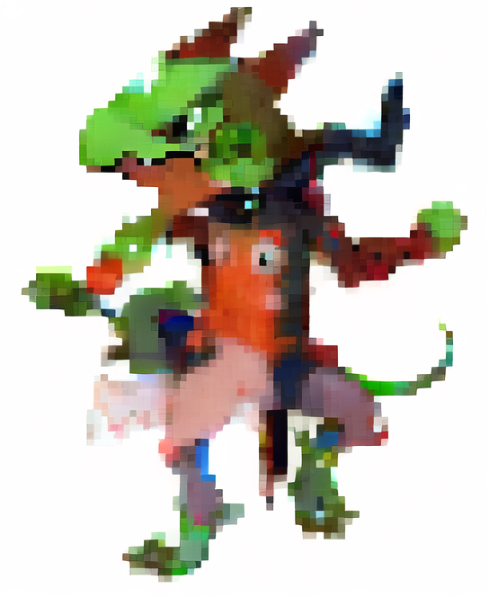

<nav class="navbar navbar-expand-lg navbar-dark bg-dark">
    <div class="container-fluid">
        <a class="navbar-brand" href="index.html">
            
            Pathfinder 2
        </a>        
        <button class="navbar-toggler" type="button" data-bs-toggle="collapse" data-bs-target="#navbarNav" aria-controls="navbarNav" aria-expanded="false" aria-label="Toggle navigation">
            <span class="navbar-toggler-icon"></span>
        </button>
        <div class="collapse navbar-collapse" id="navbarNav">
            <ul class="navbar-nav ms-auto">
                <li class="nav-item">
                    <a class="nav-link active" href="index.html">Accueil</a>
                </li>
                <li class="nav-item dropdown">
                    <a class="nav-link dropdown-toggle" href="#" id="navbarDropdown" role="button" data-bs-toggle="dropdown" aria-expanded="false">
                        Personnages
                    </a>
                    <ul class="dropdown-menu" aria-labelledby="navbarDropdown">
                        <li><a class="dropdown-item" href="commencement.html">Créer un Personnage</a></li>
                        <li><a class="dropdown-item" href="personnages.html">Classes</a></li>
                    </ul>
                </li>
                <li class="nav-item dropdown">
                    <a class="nav-link dropdown-toggle" href="#" id="navbarDropdownAtlas" role="button" data-bs-toggle="dropdown" aria-expanded="false">
                        Atlas
                    </a>
                    <ul class="dropdown-menu" aria-labelledby="navbarDropdownAtlas">
                        <li><a class="dropdown-item" href="atlas.html">Lore</a></li>
                        <li><a class="dropdown-item" href="atlasmap.html">Carte</a></li>
                        <li><a class="dropdown-item" href="atlasfactions.html">Factions</a></li>
                    </ul>
                </li>
                <li class="nav-item dropdown">
                    <a class="nav-link dropdown-toggle" href="#" id="navbarDropdownGolarion" role="button" data-bs-toggle="dropdown" aria-expanded="false">
                        Golarion
                    </a>
                    <ul class="dropdown-menu" aria-labelledby="navbarDropdownGolarion">
                        <li><a class="dropdown-item" href="golarion.html">Lore</a></li>
                        <li><a class="dropdown-item" href="https://map.pathfinderwiki.com/#location=5.54/34.237/-2.314">Carte &#x1F1EC;&#x1F1E7; ici</a></li> <!-- Emoji du drapeau anglais en Unicode -->
                        <li><a class="dropdown-item" href="golarionfactions.html">Factions</a></li>
                    </ul>
                </li>
                <li class="nav-item">
                    <a class="nav-link" href="#">Règles</a>
                </li>
                <li class="nav-item">
                    <a class="nav-link" href="#">Contacts</a></li>
            </ul>
        </div>
    </div>
</nav>
